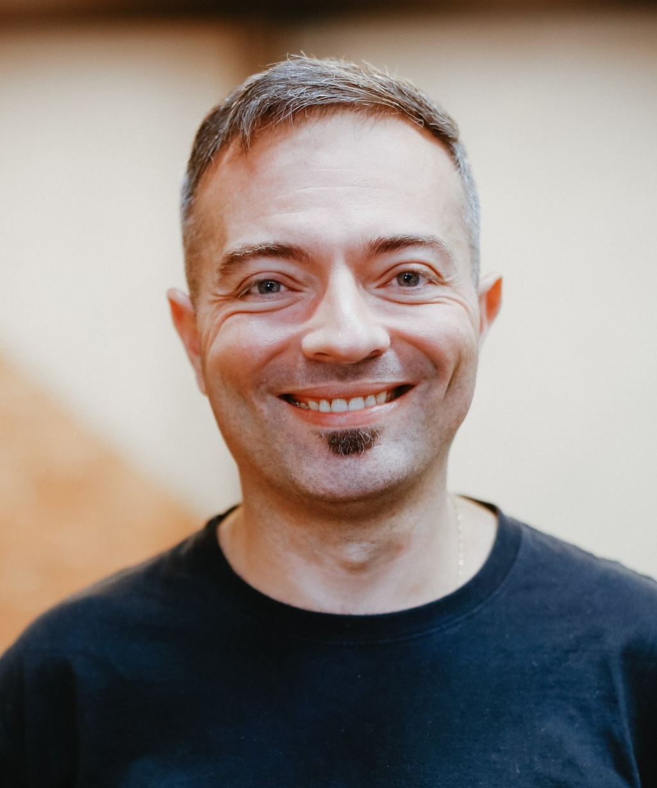

About
AI reliably produces average output — that's genuinely useful, and it means the floor just rose for everyone. What I've built over 25 years across B2B EdTech, nearshore staffing, and LatAm-US market expansion is the layer of domain depth that AI trained on average data can't replicate: knowing how these buyers think, where the deal stalls, and which metric the dashboard isn't tracking.

I'm currently Head of Outstaffing at Dev.Pro, owning full P&L for a global outstaffing business unit focused on Latin American talent for US enterprise clients — concurrent with Director of Programming at Born Global Community, a nonprofit connecting immigrant entrepreneurs and global investors with innovation ecosystems.
Before that: I grew qualified inbound leads 40% year-over-year at Ubiminds, a B2B staff augmentation company, by building a sustained events presence, co-founding a proprietary event series, and running a content engine that shortened sales cycles for CTOs and VPs of Engineering. Before Ubiminds, I ran the Brazilian subsidiary of Centric Learning's WAY American School as Executive Director — full P&L ownership, scaling the partner network from 14 to roughly 40 schools in year one, and becoming a recurring national media voice for a category of education that didn't have a name yet in Brazil.
Earlier in my career, I built the national digital marketing function for Laureate International Universities across ten Brazilian universities, launched Brazil's first ML-powered adaptive bar-exam platform at SOMOS Educação, and — in my first management role — owned the LatAm network operations budget for Telefónica Internacional, reporting directly into Madrid.
I'm pursuing an MBA in AI & Digital Transformation at USP — not to catch up to AI, but to build a formal operating model around it. The question I'm working on isn't "how do I use AI?" It's "what does human judgment look like when AI handles everything below the line?"
Career timeline
May 2025 – Present
Full P&L ownership of a global outstaffing business unit, focused on LatAm talent for US enterprise technology clients. Concurrent with Born Global Community.
Feb 2025 – Present
Programming strategy and community-building for a nonprofit connecting immigrant entrepreneurs and global investors.
Aug 2023 – Apr 2025
CMO-level scope. 40% YoY qualified lead growth. Read the case study →
Apr 2018 – Apr 2023
Full P&L ownership, Brazil subsidiary + US market entry (Texas, Florida). Read the case study →
2019 – 2022 (concurrent)
Evaluated international schools across Latin America for accreditation as a named site-visit evaluator. Read the case study →
Mar 2018 – Feb 2019
Taught MBA-level marketing and pipeline management. Read the case study →
Jul 2016 – Oct 2017
Launched Saraiva Aprova, Brazil's first ML-powered adaptive bar-exam platform. Read the case study →
Jul 2012 – Jun 2016
Built the national digital marketing function across 10 universities in Brazil. Read the case study →
May 2009 – Jan 2012
First management role, continental-scope budget, direct HQ exposure in Madrid. Read the case study →
Jul 2004 – May 2009
Concurrent 6-month job rotation as Marketing Coordinator at Telefónica USA (Miami) — first time living abroad.
Education & credentials
Both graduate scholarships below were fully-funded, competitively awarded seats — external validation of high potential at an early career stage, not self-paid credentials.
Building a formal operating model for AI-driven growth strategy — not just using AI tools.
Full scholarship, jointly run with Universitas Telefónica for promising young executives. Hybrid format: residency weeks in Barcelona, weekly online classes.
Full scholarship via Fundación Carolina — one seat reserved for a promising Telefónica young professional, selected against thousands of applicants.
Invited to teach "Global Collaboration: Navigating Cultural Differences for Business Growth." Read more →
What colleagues say
"I had the chance to work with Thiago on two different occasions — once at Laureate and more recently at SOMOS Educação. Both times, Thiago showed extreme dedication, competence, and above all a strong sense of business and management vision — always focused on promoting innovation and how those actions could positively impact the institutions he worked with."
Fabricio Espel
AI & Data Engineer, Hagens
"Thiago is a very competent marketing person. I had the opportunity to work with him a few years ago on some digital projects that really took the company a step further. He was open-minded enough to hear and think through different solutions. Looking forward to working with Thiago again."
Guilherme dos Anjos
Head of Industry, Telecom/Content/Gaming, Google
"I have always enjoyed working with Thiago. He is a nerd at heart with a love for marketing and the digital landscape. I learned a lot about inbound marketing and tools from him — still do. Here's hoping to work together again soon!"
Vicente Carrari Rodrigues
Sales Director, Spotify
"Thiago is a professional with strong ethics and seriousness. He has an innovative vision for marketing, combined with deep knowledge of multi-channel relationship building."
Fabio Salatino
VP Americas, Healthcare & Life Sciences, CI&T
"Thiago's main traits are innovation and a genuine willingness to help. He stands out for developing teams — shaping professionals who go on to excel in their own areas. Excellent interpersonal skills, moving easily across every level of the company's hierarchy."
Fabiane Lombardi
Diretora de Experiência do Cliente, Weber Shandwick Brasil
"We had an excellent manager — always positive in his approach and genuinely invested in his team and their development. A great communicator with strong cross-functional relationships, sharp digital instincts, and solid grounding in technology and online relationship-building."
Carolina Bastos
Coordenadora de Marketing, Fremê Pescados
"Thiago is a wonderful professional with strong international experience. He is results-oriented and very flexible, knowledgeable across marketing, finance, and accounting — and a great communicator with a strong relationship with other departments in the company. I strongly recommend him."
Silvia Maculevicius
Consultor Associado, MS Consulting
Quotes translated from Portuguese where originally submitted in Portuguese, as posted on LinkedIn.
Languages
I operate fluidly between LatAm execution realities and US commercial expectations — and I've lived that bridge firsthand across Brazil, the US, and Spain.
Off the clock
Twenty-five years of case studies is one version of the story. Here's the other one: guitar since age 11, a vinyl collection that keeps growing, and a rockstar dream deferred, not abandoned. I read constantly, and keeping up with whatever's actually good in film and TV is usually the fastest way to get me talking outside a meeting.